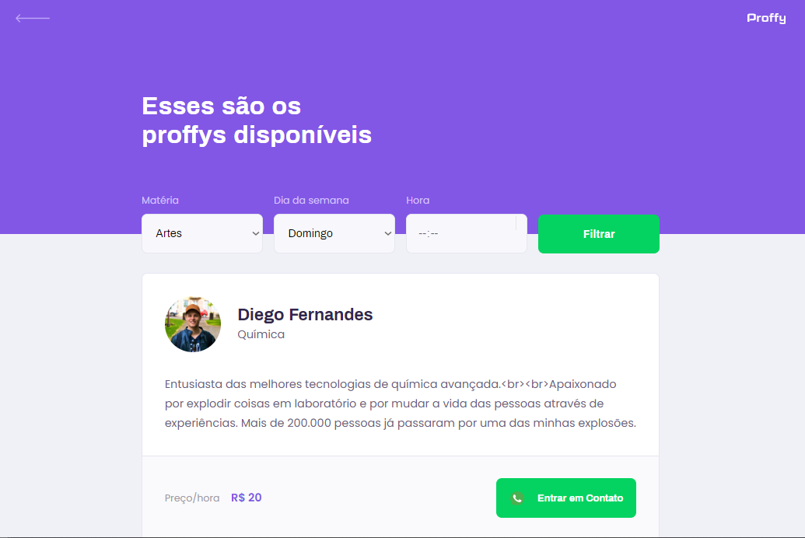
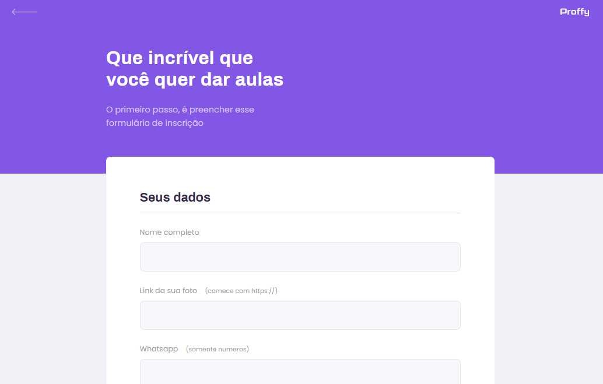

Proffy
- Categoria: Desenvolvimento Web
- Data do Projeto: Agosto, 2020
- URL: Github
Objetivo
A proposta do projeto é fazer com que, os Proffys possam ensinar alunos que queiram aprender, também alunos que procuram aulas para reforçar suas piores matérias ou até mesmo melhorar em alguma.
Técnologias utilizadas
HTML5, CSS3, Javascript, Node.js, Nunchuks e SQLite.
Página Inicial
A página inicial do Proffy destaca como alunos e Proffys devem se manter atualizados em questão do mundo, assim como os Proffys precisam espalhar o conhecimento, os alunos também devem procurar conteúdo para absorver.
Página Inicial
Página para busca de Proffys
Página para busca dos Proffys que estam cadastrados e disponíveis na plataforma. Onde é possível contatar o Proffy por meio do Whatsapp, ter informação de qual matéria ele leciona e o valor da hora da aula.

Página para busca de Proffys
Página de cadastro de Proffys
Os Proffys são cadastrados por meio de um formulário rápido, onde é possível inserir vários dados, alguns são o valor, dia e hora de disponibilidade para realizar as aulas.

Página de cadastro de Proffys
Referencias